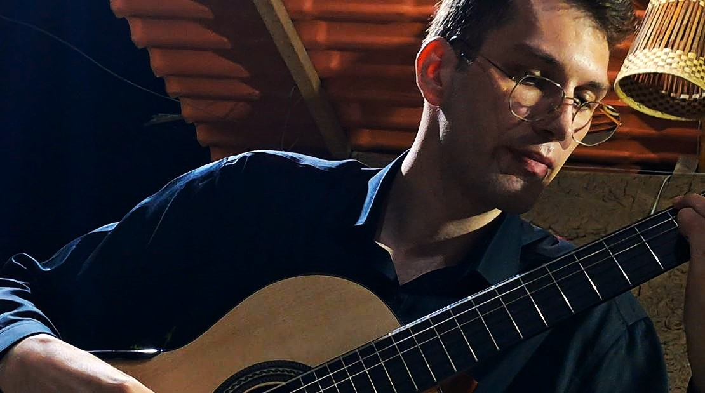
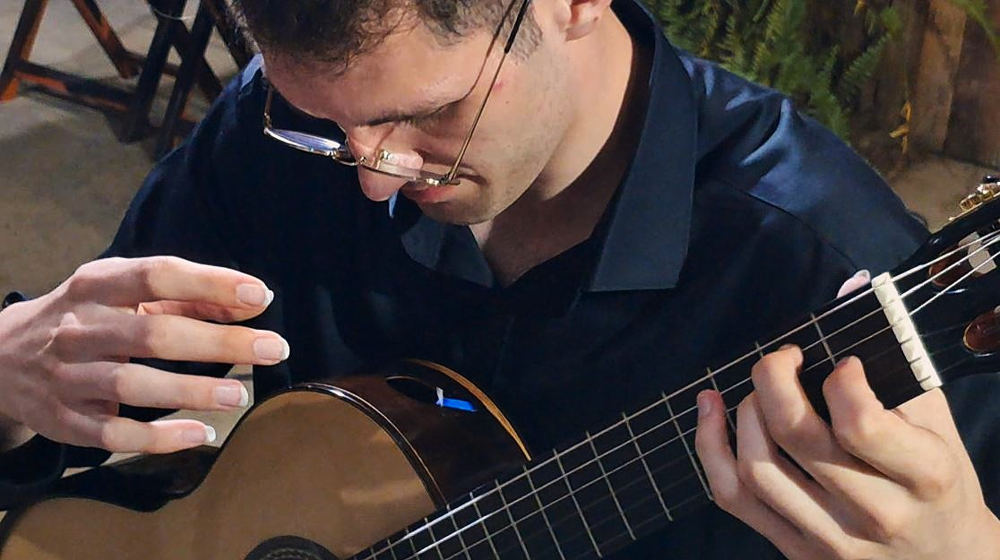
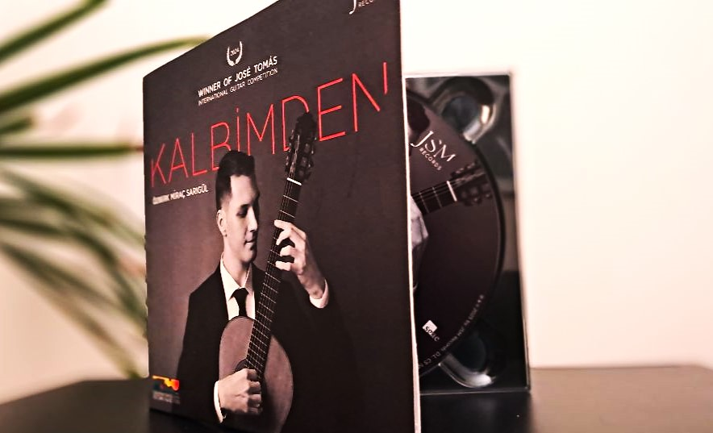
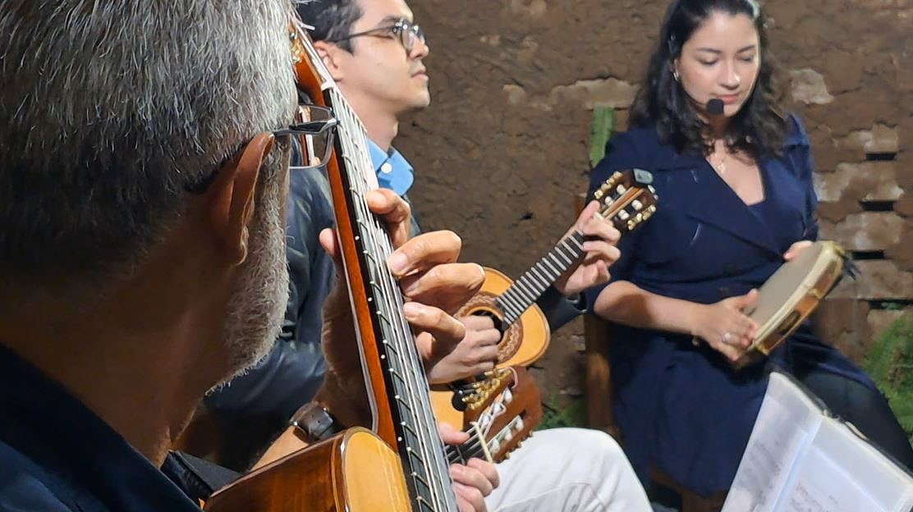
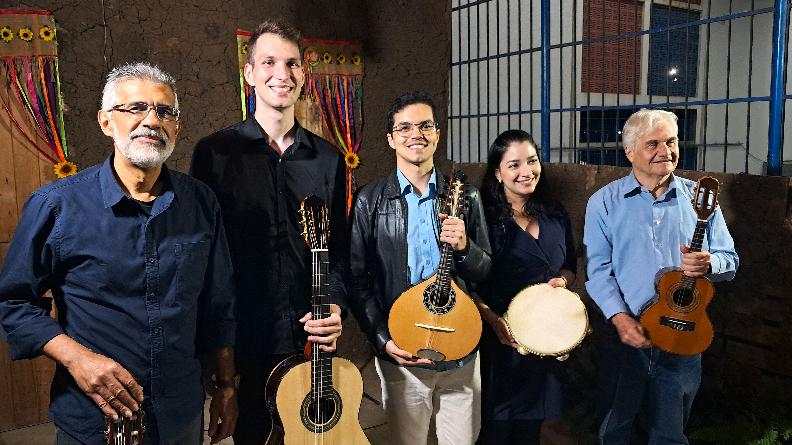

The borders crossed by Özberk Miraç Sarıgül's guitar took on a new dimension in August. On his first visit to Brazil and to the continent, the Turkish musician arrived in Queimadas, in Paraíba's Agreste region, as one of the featured performers in the first act of the second edition of the Queimadas International Music Festival (FIMQ).
Held on August 17, the program brought together Özberk and Paraíba's Grupo Chorata, opening an edition structured in three acts and marked by encounters between international guests and Brazilian artists.

His visit to Brazil is part of a concert tour connected to the first prize he won at the José Tomás Villa de Petrer Competition in Spain. Winner of the competition in 2024, Özberk also received the opportunity to record his first album as part of the prize.
“I’m so happy to be here to share my music, to interpret Brazilian music, and share a wonderful night with awesome Brazilian people.”
In an interview with Paraíba ponto Cultural, Özberk highlighted the opportunity the award gave him to experience different cities and cultures in Brazil. He also said he looks forward to returning after this tour.
From study to international competitions
Born in 2000, Özberk began playing classical guitar at the age of 10. Looking back on the beginning of his career, he associates his musical development with an intense practice routine and, later, preparation for competitions and concerts.
“I started playing classical guitar at the age of 10, and I had a lot of practice, a lot of musical practice in my room where I was alone all day, all night. Then, with the opportunity, I had to prepare myself for the competitions, for the concerts.”
The biography included in the booklet of his debut album states that, in 2012, he entered the preparatory school of Bilkent University's Faculty of Music and Performing Arts in Turkey, where he continued his studies through graduation. The biographical material also records more than 15 first prizes in international guitar competitions and his selection as a EuroStrings artist for the 2021–2022 season.

During the interview in Queimadas, the guitarist recalled the international scope of the Spanish competition and credited the victory with opening new concert opportunities. “I had that opportunity to get the first prize, and as a thanks to that award, I'm here,” he said.
An album between different cultures
Part of the prize won in Spain resulted in Kalbimden, Özberk's debut album, recorded in Spain in 2025 and released by JSM Records. The musician gave a copy of the album to Paraíba ponto Cultural during the festival coverage.

Its ten tracks cross different musical traditions, bringing together works by Federico Moreno Torroba, Ariel Ramírez, Isaac Albéniz, Roland Dyens and Mauro Giuliani, as well as pieces connected to Turkish and Anatolian musical traditions. Among them is Roland Dyens's Saudade No. 3, a choice that resonates with the musician's stated interest in interpreting Brazilian repertoire during his time in the country.
The encounter with Grupo Chorata
FIMQ's first act was not built solely around its international guest. The program placed Özberk alongside Grupo Chorata, representing Paraíba in the opening of the second edition. The encounter between an international attraction and local music-making reflected one of the ideas emphasized by the festival's organizers.

According to Artur Nascimento, director of FIMQ, the presence of guests from other countries is designed to work alongside local performers. He says this combination allows audiences in Queimadas to encounter different repertoires while continuing to value music produced in the region.
“For the festival, it is an enriching moment. This year we will have three more international guests, mixed, of course, with our local attractions, also bringing high-level Brazilian music.”

Three acts, one story
The second edition of the Queimadas International Music Festival was organized under the motto “Three acts, one story.” Following the meeting of Grupo Chorata and Özberk on August 17, the festival poster announced a second act featuring Italian artists on August 31 and a third, on September 24, bringing together Mexican and Brazilian performers.
The festival is organized by Instituto Musical Anton Bach. For Artur Nascimento, the role of a music school can extend beyond teaching and take on a cultural dimension as well, helping broaden the city's cultural horizons.
The night of August 17 embodied that idea in two directions: on one side, the international journey of a young Turkish guitarist who reached Brazil through an award won in Spain; on the other, the presence of Paraíba's music in the same program through Grupo Chorata. In Queimadas, those paths met on a common stage.